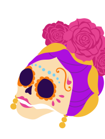
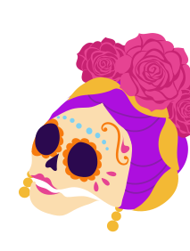

Au-delà de l'icône
Bienvenue dans la nouvelle exposition virtuelle intitulée “Au-delà de l'icône”, présentée par l’agence Adeanart.
Notre exposition tourne autour de trois thématiques, soit trois univers fascinants que vous découvrirez ci-dessous. Nous vous invitons à explorer ces univers avec curiosité et ouverture d'esprit, et à vous laisser emporter par la richesse de l'art et de la vie de Frida Kahlo.
DATE
Du 13 juillet au 13 août 2024
LIEU
Champs sur Marne, IUT marne la vallée
TARIF
Gratuit
UNE FEMME ENGAGÉE
Dans le premier volet de notre exploration artistique, nous plongeons dans l'engagement politique vibrant de Frida Kahlo. À travers son art, elle a vigoureusement défendu ses convictions politiques, sociales et communistes. Ses œuvres ont soulevé des débats ardents sur des questions telles que la justice sociale, l'égalité des sexes et les inégalités économiques.
Ses oeuvresHÉRITAGE CULTUREL
Frida Kahlo a célébré son héritage culturel mexicain à travers son art, mettant en valeur la richesse et la diversité de la culture mexicaine à travers ses couleurs vives et ses motifs indigènes. Son travail affirmait fièrement son identité nationale et son appartenance à un peuple résilient et vibrant, tout en laissant un impact durable sur l'art moderne.
Ses oeuvres 


vie intime
vie intime
Dans son art, Frida Kahlo explore profondément sa vie intime,à travers ses autoportraits et ses compositions, elle explorait sans retenue sa propre expérience émotionnelle et physique, offrant aux spectateurs un aperçu fascinant de son monde intime et de son paysage émotionnel.
Voir Plus